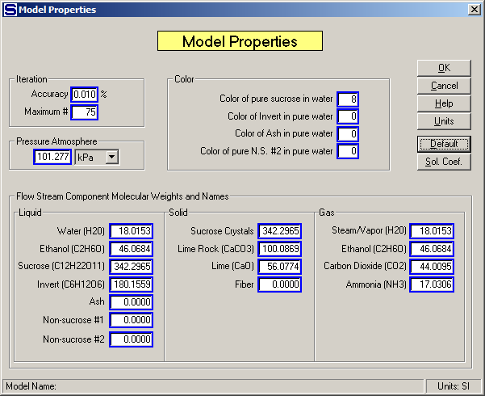

New solubility equation coefficients can be specified if the reaction causes a change in the solubility coefficients for the sucrose solubility function. If the solubility coefficients are entered as 0.0, or left blank, no changes will occur in the solubility coefficients between the input and output flows. A reactor station can be used to control the sucrose solubility for subsequent portions of the process by not specifying a reaction, but instead giving new coefficients to the flow stream.
Also, a reactor station can be used to simply change the color of a flow stream. The color change only applies to the non-sucrose no. 1 component; that is, if the flow stream doesn’t contain any non-sucrose no. 1 component, then the color change won’t be applied to the flow stream. If a negative color change causes the non-sucrose no. 1 component to be less than zero, the non-sucrose no. 1 component will be reduced to zero (colorless) and the color of the output flow stream will only reflect the color of the sucrose, invert, ash and non-sucrose no. 2 color values. The color of these four components is defined by the color entries made for the "Color of pure sucrose in water", “Color of Invert in pure water”, Color of Ash in pure water” and "Color of pure N.S. #2 in pure water" on the Model Properties window (see below).
